Projects
ShopFloor AI: Predictive Maintenance and RAG for the Factory Floor
Unplanned equipment failure is the expensive kind: a line goes down with no warning, and the people who could fix it are buried in PDFs looking for the right procedure. ShopFloor AI is an end to end system that predicts machine failure before it happens (Gradient Boosting, 0.85 F1, 0.96 AUC-ROC) and pairs it with a retrieval assistant that answers maintenance questions in plain language, all shipped as a seven service containerized stack that retrains itself daily.
Why This Matters
Most predictive maintenance projects stop at a notebook with a good ROC curve, which is the part that matters least on a real shop floor. The value shows up only when the prediction reaches an operator in time, updates as new sensor data streams in, and sits next to the documentation someone needs to actually act on the alert. This project was built to cover that full loop: a trained classifier, a live data stream, an automated retraining schedule, and a documentation assistant, wired together as running services rather than scripts.
The Failure Prediction Model
Trained on 10,000 manufacturing sensor records spanning five distinct failure modes. Sixteen features were engineered from the raw signals, including power output, thermal differential (the gap between process and ambient temperature), and mechanical overstrain metrics, since the physics of failure lives in these derived quantities more than in any single raw reading. Several classifiers were compared; Gradient Boosting was selected on a held out set with an F1 score of 0.85 and AUC-ROC of 0.96, balancing precision against recall so the system flags real failures without drowning operators in false alarms.
Streaming and Anomaly Detection
Sensor readings flow through an Apache Kafka pipeline that simulates a live plant feed. On top of the stream, the system computes rolling KPIs and runs programmatic anomaly detection, so a machine drifting toward one of the five failure modes surfaces as it happens rather than in a next day report. This is the piece that turns a static model into an operational early warning system.
Documentation Assistant (RAG)
The second half of the system is a retrieval augmented generation assistant built with LangChain, ChromaDB as the vector store, and the OpenAI API for generation. Maintenance manuals and procedure documents are embedded and indexed, so an operator can ask a natural language question ("what is the shutdown procedure for a thermal fault on line 2?") and get a grounded answer pulled from the actual documentation instead of hunting through PDFs. The retrieval step keeps answers anchored to the source material rather than to the model's open ended guesses.
Deployment Architecture
The whole system runs as a seven service application orchestrated with Docker Compose, so it stands up with a single command and each piece scales independently:
- FastAPI serves the prediction and retrieval endpoints over REST.
- Streamlit provides the interactive dashboard where operators see predictions, KPIs, and the assistant.
- Apache Kafka carries the streaming sensor data.
- Apache Airflow runs automated daily retraining, with data quality gates that block a bad batch from ever reaching the model.
- MLflow tracks experiments and handles model registry promotion, so a newly trained model is only promoted to production if it clears the bar.
- ChromaDB holds the document embeddings for the RAG assistant.
What This Project Demonstrates
The interesting engineering here is not the model, it is everything around it: a retraining schedule that runs without a human, quality gates that refuse to promote a model trained on bad data, a registry that separates "trained" from "deployed," and a streaming layer that keeps predictions current. That is the difference between a model that scores well once and a system a plant could actually depend on.
JMA Wireless: Lean Six Sigma DMAIC Manufacturing Dashboard
Full DMAIC engagement with JMA Wireless (US manufacturer of 5G cell tower equipment) to standardize manufacturing KPIs, build a Python ETL pipeline that flattened 31 GB of nested PLC JSON into a 5 MB Power BI ready dataset, and deliver a Power BI dashboard comparing two assembly lines. Projected recurring impact of roughly $355,000 annualized through recovered throughput and analyst time.
Engagement
Spring 2026 capstone for SCM 755 Lean Six Sigma at Syracuse Whitman School of Management, sponsored by JMA Wireless (Liverpool, NY), a US based manufacturer of cell tower transmitters and active 5G wireless infrastructure. Project sponsor: Ted Ens, SVP Global Operations. Project champion: Michael Harris. Faculty advisor: Prof. Gary E. La Point. Team of five graduate students delivering on a fifteen week academic schedule with weekly on site stakeholder access.
Problem
JMA's Jumper Department produces radio frequency cables that connect transmitters to antennas, and runs two parallel final assembly lines with very different characteristics. Jumper 1.0 is a manual line with eight or more operators across two shifts. Jumper 2.0 is a fully automated PLC controlled cell installed in 2025. Despite both lines feeding the same financial plan, leadership had no consolidated, real time view of either line. Production data lived in four separate systems (SAP MB51, ADP payroll, the Jumper 2.0 automation system, and an inspection database) and was manually reconciled into a slide deck on a three to five day lag, consuming approximately 48 analyst hours per week.
DMAIC Approach
- Define. Wrote a structured problem statement, drafted the project charter with sponsor approval, mapped the SIPOC diagram for the data pipeline, built the CTQC tree translating Voice of the Customer statements into measurable dashboard characteristics, and established a tiered communication plan across weekly, bi weekly, and milestone cadences.
- Measure. Inventoried four source systems, agreed standardized definitions for five KPIs (Parts per Labor Hour, Uptime, First Time Throughput, Schedule Attainment, plus a derived total), and built the Python ETL pipeline that made the Jumper 2.0 PLC data usable. Captured the baseline measurement window from February to April 2026.
- Analyze. Applied Pareto reasoning and fishbone (Ishikawa) analysis on the largest gap (Jumper 2.0 schedule attainment), surfacing material flow and kitting cadence as the dominant root causes rather than equipment availability. Verified hypotheses with Minitab descriptive statistics.
- Improve. Used a Pugh matrix to score three candidate interventions against weighted criteria, recommended a daily standup at the dashboard wall screen, a continuous kitting feed for Jumper 2.0, and a recalibration of Jumper 2.0 weekly targets to demonstrated capability during ramp.
- Control. Wrote the FMEA for dashboard reliability, named owners for each maintenance task, drafted the escalation framework, and delivered the Control Plan summary that lets JMA sustain the dashboard after the engagement closed.
Data Engineering
The largest technical effort was making the Jumper 2.0 automation feed usable. The cell publishes one TestReportComplete JSON record per test event, deeply nested four layers deep (tests within measurements within channel readings). Two raw datasets totaling 31 GB of JSON were unusable in Power BI: the modeling engine could not flatten the structure efficiently, and the file would not open on any analyst laptop with less than 64 GB of RAM.
I built a Python pipeline using Pandas json_normalize with explicit record paths and openpyxl as the writer. The pipeline extracts the nested JSON, walks the structure with explicit record paths, type casts timestamps to datetime64, channel readings to float64, and pass and fail flags to boolean, computes a CycleTime_sec column from start and end timestamps, and writes a wide format Excel file with frozen headers. Output is under 5 MB and loads instantly in Power BI. Pipeline runtime for a full week of cycles is under 30 seconds on a standard analyst laptop.
Standardized KPI Framework
The single most important Define Phase deliverable was a written, sponsor approved KPI definition document. Prior to the project, terms like Uptime and Schedule Attainment were used inconsistently across JMA functions. The team interviewed sponsor, champion, manufacturing manager, manufacturing engineer, quality engineer, and production supervisor to align on definitions:
- Parts per Labor Hour (PPLH). Good Parts divided by Total Labor Hours. Target: 50 or above. The cleanest metric for comparing manual vs automated line economics.
- Uptime. Runtime divided by Runtime plus Downtime. Target: 85 percent or above. Leading indicator of throughput problems.
- First Time Throughput (FTT). Good Parts divided by Total Parts Tested. Target: 95 percent or above. Direct quality measure; rework consumes capacity and inflates cost per cable.
- Schedule Attainment (SA). Actual Weekly Production divided by Weekly Target. Target: 100 percent or above. The most direct link between operations and the financial plan.
Baseline Findings
The standardized measurement revealed sharp asymmetries between the two lines that the prior reporting cycle had not surfaced:
- FTT: 87.9 percent on Jumper 1.0 and 92.5 percent on Jumper 2.0, both below the 95 percent target.
- PPLH: 34.91 on Jumper 1.0 and 7.94 on Jumper 2.0, both below the 50 target but for opposite reasons (high labor denominator vs low output numerator).
- Uptime: 31.3 percent on Jumper 1.0 vs 97.3 percent on Jumper 2.0. The widest gap in the analysis and the clearest evidence for the value of automation.
- Schedule Attainment: 139.7 percent on Jumper 1.0 vs 46.3 percent on Jumper 2.0. The manual line is being pushed past design rate to absorb the gap the automated line is leaving behind.
The combination of 97.3 percent uptime and 46.3 percent schedule attainment on Jumper 2.0 pointed directly to a material flow constraint rather than a hardware constraint: the cell is running fine when it has work, but is starved for inputs.
Power BI Dashboard
The dashboard sits on top of the cleaned data and presents an Overview page (executive summary tiles, color coded against targets), one detail page per KPI, and a what if parameter slider that lets users adjust weekly targets dynamically. The Overview page is designed to be readable in twenty seconds at the wall screen during a shift change. Conditional formatting uses a three tier color system (green at or above target, amber between 85 and 100 percent of target, red below 85 percent), driven by DAX KPI_Status_Color measures. DAX library covers ten measures across the four KPIs, with separate measures for each line and aggregate totals.
Quantified Impact
Closing the Jumper 2.0 schedule attainment gap from 46.3 percent to 100 percent of weekly target recovers approximately 27,000 jumper cables per year with no additional labor required. At an assumed contribution margin of $12 per cable, the recurring annualized opportunity is roughly $324,000.
The dashboard also eliminates approximately 48 analyst hours per week previously spent manually assembling the weekly KPI report. At a fully loaded analyst rate of $12.50 per hour, that is an additional $31,200 annualized.
Combined recurring annualized value of roughly $355,000 per year from a single department pilot, with a standardized data pipeline pattern that JMA can extend to other manufacturing departments at Liverpool.
Tools and Frameworks Used
DMAIC framework throughout. Project Charter, SIPOC, CTQC tree, Communication Plan, and Stakeholder Analysis in Define. Data Collection Plan, Data Map, and operational definitions in Measure. Fishbone (Ishikawa) and Pareto in Analyze. Pugh Matrix and Benefit Effort prioritization in Improve. FMEA, Control Plan, and Escalation Framework in Control. Python (Pandas, openpyxl), Excel, Power BI, DAX, and Minitab for the supporting analysis.
The Perfect Lap: F1 Pit Stop Strategy Optimization
Race engineers in Formula 1 have seconds to decide when to pit, and a single bad call can cost a team millions in lost prize money. This project builds a Random Forest model trained on twenty years of race data that predicts the optimal first pit lap within 2.78 laps of the actual decision, deployed as a Streamlit app race strategists can use as a live second opinion.
Why This Matters
Pit stop timing is one of the highest leverage decisions in motorsport. A miscall on lap selection can cost a team between two and five constructor championship positions over a season, translating to millions of dollars in lost prize money and sponsorship value. Race engineers currently make these calls in the moment with limited time, leaning on experience and real time telemetry. The premise of this project was simple: if the model can predict the optimal lap accurately enough, it becomes a live sanity check that the human strategist either validates or knowingly overrides, instead of a guess they make alone.
Stakeholders and Value
- Race engineers get a data driven baseline against which to justify or override intuition on race day.
- Strategy directors get a tool that surfaces broad patterns across decades of races, supporting pre season strategic planning.
- Broadcast analysts and fantasy F1 platforms get credible strategy probabilities they can communicate to viewers.
Data and Cleaning
Source: Formula 1 World Championship dataset on Kaggle (1950 to 2020), 250,000+ records across thirteen interconnected tables (races, results, pit stops, drivers, constructors, lap times, qualifying, status codes, circuits, and more). A custom track_features table was added for tire degradation level and pit lane time loss per circuit, since these physical realities drive strategy more than the raw schedule data captures. The data was filtered to post 2000 races to focus on the modern tire era, since pre 2000 strategy was driven by fuel weight rather than tire compounds. The final modeling dataset is 14,000+ driver race rows with 45 engineered features.
Cleaning rules: removed invalid pit lap records (below lap 1 or above lap 40 are data entry errors), stripped drivers with more than two pit stops per race (these signal damage or weather chaos rather than normal strategy), and dropped early DNFs so the training set reflects strategic behavior rather than mechanical failures.
Recovering Missing Data
Pit records before 2012 were sparse. A naive drop missing strategy would have shrunk the dataset from 10,000 rows to 3,000. I trained a dedicated Random Forest imputer that recovered roughly 70% of missing first pit laps using six predictors that are reliably present even in older races: driver ID, constructor ID, race year, starting grid position, total race laps, and circuit ID. Imputation MAE was about six laps on a held out validation set, which is tolerable given pit windows typically span ten to fifteen laps.
Models Compared
Four tree based regressors plus a decision tree baseline, identical splits and cross validation. Neural networks and SVMs were deliberately excluded because they are computationally heavier and consistently underperform tree ensembles on tabular data with this feature mix.
| Model | Train MAE | Test MAE | Train R² | Test R² | Status |
|---|---|---|---|---|---|
| Random Forest | 1.007 | 2.78 | 0.943 | 0.591 | Selected |
| Extra Trees | ~0 | 2.91 | 1.000 | 0.551 | Overfits |
| CatBoost | 2.540 | 3.02 | 0.702 | 0.523 | 2nd best |
| Gradient Boosting | 3.234 | 3.15 | 0.564 | 0.487 | Weakest |
Random Forest landed at Test MAE 2.78 laps and Test R² 0.591, meaning predicted pit windows fall within roughly three laps of what teams actually did. Extra Trees showed near perfect training scores but worse generalization, the classic memorization signature. Gradient Boosting struggled with the noise introduced by safety cars and weather changes, since it prefers smoother data patterns. CatBoost would normally have a categorical handling advantage, but our pipeline pre encoded categorical variables for fair comparison, neutralizing that edge.
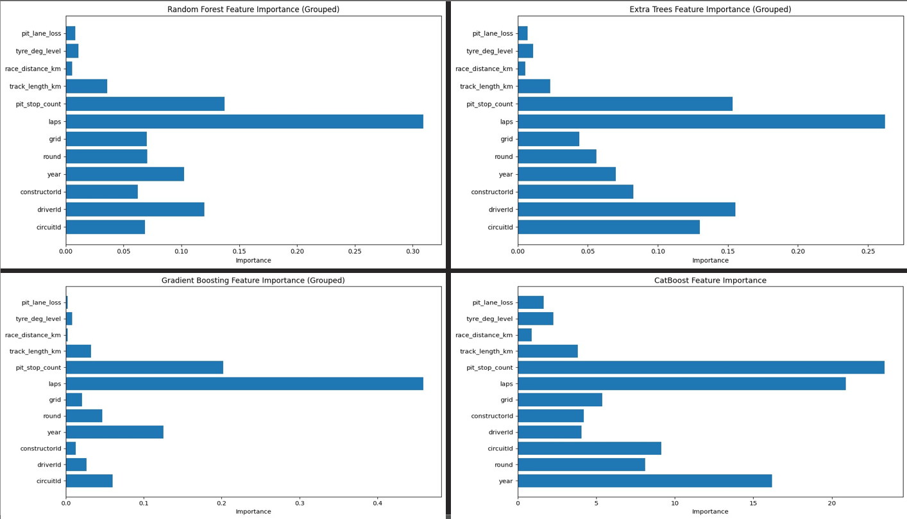
What the Model Learned
SHAP analysis on the Random Forest model revealed that race structure features dominate the prediction. The top five contributors are total laps, planned pit stop count, year (proxying for regulation changes), round, and starting grid position. Driver and constructor identities mattered considerably less than F1 commentary tradition suggests.
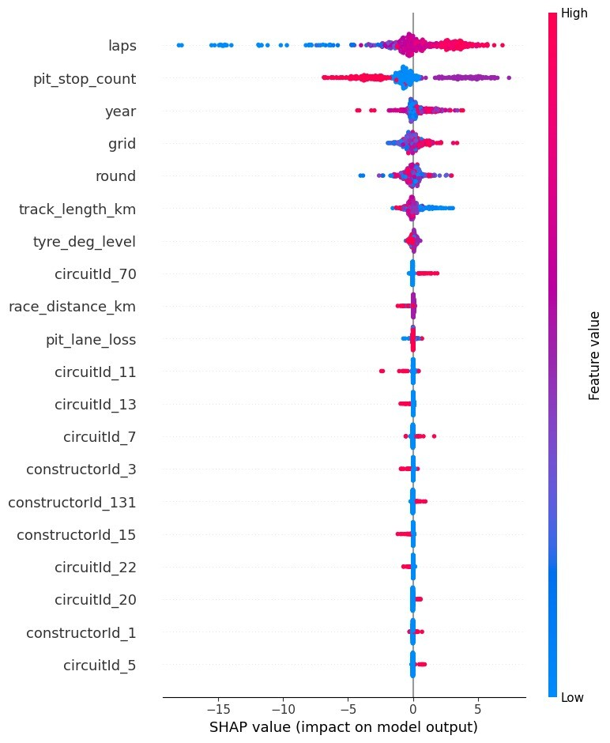
Practical Implication
Pit timing is more a property of the physical system (circuit, race length, planned stops) than of the person behind the wheel. The practical instruction for engineers: adapt strategy to circuit and race length first, team history second, driver style third.
Deployment
The final Random Forest model was serialized and packaged into a Streamlit web application (team_omega_rf_app.py). Race engineers input live race context (circuit, grid position, planned stops, weather) and the app returns a predicted first pit stop lap in real time, alongside the SHAP feature importances that drove the prediction. Serialized model artifacts (f1_random_forest_model.pkl, model_features.pkl) live in the project repository.
Honest Limitations
- No live race signals. Safety car deployments, sudden weather changes, and real time tire telemetry are absent. These dynamic elements drive real pit decisions and represent a genuine information gap between the static model and live race conditions.
- First stop only. The model predicts only the first pit lap, not full multi stop strategies. Subsequent stops depend on the first, creating interdependencies the current approach does not capture.
- No competitor model. Real strategy reacts to opponents (undercuts, overcuts). The model encodes neither opponent positions nor gap sizes.
- Regulation drift. F1 rules change often. Patterns from early 2000s races may not apply directly to current regulations, slightly diluting accuracy for contemporary strategy prediction.
Multi Horizon Geomagnetic Kp Index Prediction
Geomagnetic storms cost billions in satellite damage and grid disruption when they catch operators off guard. This LSTM forecasts the Kp storm index at 1, 3, 6, and 12 hour horizons simultaneously, cutting RMSE by 45% vs the mean baseline at the operationally critical 1 hour mark. Eleven years of NASA OMNI2 data, 96,000+ hourly measurements, single multi output model.
Why This Matters
Geomagnetic storms, caused by solar wind disturbances interacting with Earth's magnetosphere, are not abstract. The 1989 Quebec blackout cut power to six million people for nine hours. The 2003 Halloween storms damaged satellites and disrupted aviation. The economic exposure of severe storms is in the billions of dollars. Operators need lead time, ideally six to twelve hours, to safe satellites, derate transformers, and reroute aviation away from polar GPS dead zones. The Kp index (a 0 to 9 quasi logarithmic scale measured every three hours) is the standard operational trigger. Anything that improves Kp forecasting at multiple horizons translates directly into action lead time.
Stakeholders and Why Multi Horizon Matters
Different operators need different lead times. Satellite mission controllers need 6 to 12 hour notice to plan orbital maneuvers and power down sensitive instruments. National grid operators need a few hours to derate transformers ahead of geomagnetically induced currents. GPS dependent industries (aviation, surveying, autonomous vehicles, precision agriculture) act on shorter horizons. The reason this model predicts all four horizons in one forward pass instead of training four separate models is that a single, internally consistent forecast across the full operational range is far more useful than four separate forecasts whose predictions might silently disagree.
Data
Source: NASA's OMNI2 high resolution database, hourly measurements of solar wind and interplanetary magnetic field parameters. Eleven years of coverage (January 2013 to December 2024), totaling 96,552 hourly records. The window spans the declining phase of solar cycle 24, the 2019 to 2020 solar minimum, and the rising phase of solar cycle 25, giving the model exposure to both quiet and active regimes.
From the original 55 parameters I selected 15 features grounded in physics literature and correlation analysis against Kp. Feature importance fell into clear physical categories:
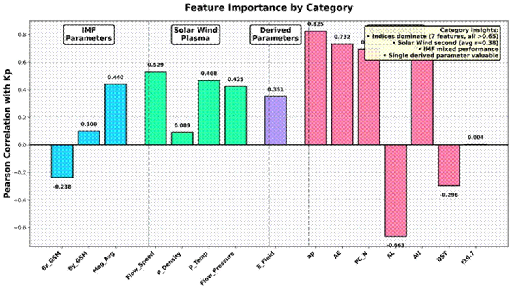
The strongest predictor was ap_Index (r = 0.825), followed by auroral electrojet indices (AE r = 0.732, AL r = -0.663, AU r = 0.690). IMF_Bz_GSM showed weaker correlation than expected (r = -0.238), reflecting that the dataset includes all periods rather than just storm windows.
Architecture
Two layer LSTM with the following structure:
| Parameter | Value |
|---|---|
| Input sequence length | 24 hours (24 timesteps × 15 features) |
| Output | 4 predictions (Kp_1h, Kp_3h, Kp_6h, Kp_12h) |
| Loss function | Mean Squared Error |
| Optimizer | Adam, initial learning rate 0.001 |
| Batch size | 64 sequences |
| Epochs | Maximum 50, early stopping at epoch 39 |
| Normalization | StandardScaler on all features |
Chronological split (50% train / 16.6% validation / 16.6% test) with 8,761 hour temporal gaps between sets to prevent leakage, since this is a time series problem where the sequential boundary matters. Training converged cleanly with the best validation loss at epoch 39, after which validation loss plateaued and training kept improving (the textbook overfit signature, caught by early stopping).
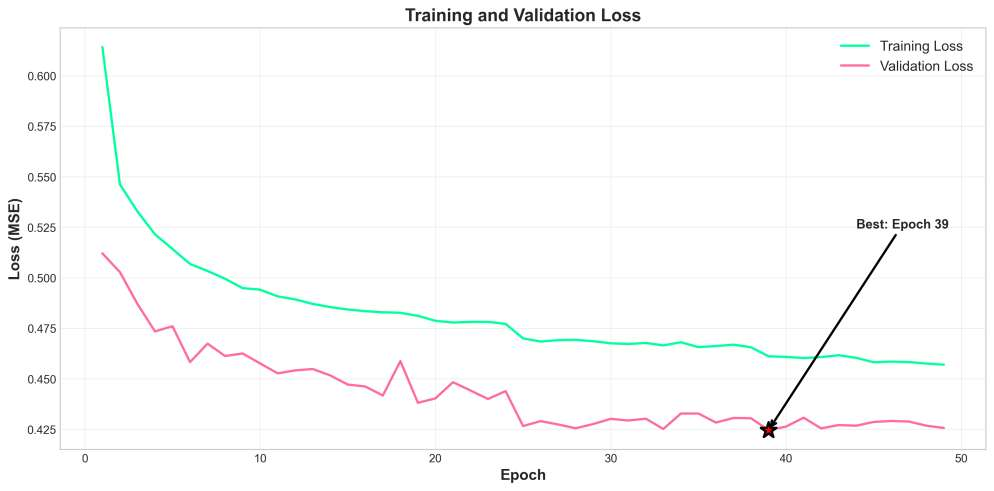
Results by Horizon
| Horizon | RMSE | MAE | R² | Baseline RMSE | Improvement |
|---|---|---|---|---|---|
| 1 hour | 0.738 | 0.476 | 0.690 | 1.34 | +44.9% |
| 3 hours | 0.910 | 0.655 | 0.528 | 1.34 | +32.1% |
| 6 hours | 1.073 | 0.793 | 0.343 | 1.34 | +19.9% |
| 12 hours | 1.207 | 0.906 | 0.170 | 1.34 | +9.9% |
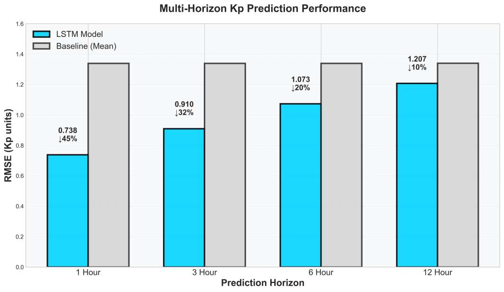
Performance degrades smoothly with horizon, which is the expected behavior for any forecasting system since the signal to noise ratio falls with lead time. The 1 hour horizon is the most operationally useful for short term tactical actions (GPS protection, immediate satellite ops), while the 6 and 12 hour horizons support strategic planning even with reduced confidence.
Behavior During Real Storm Events
The most useful diagnostic is whether the model can flag a storm coming, even imperfectly. Below is a 200 hour window from the test set covering a real storm event (red shaded zone, where actual Kp crosses the threshold of 5). All four horizons capture the storm onset, but with different lag and magnitude. The 1 hour forecast tracks actual Kp closely; the 12 hour forecast smooths the peak but still indicates elevated activity, which is exactly what an operator needs.
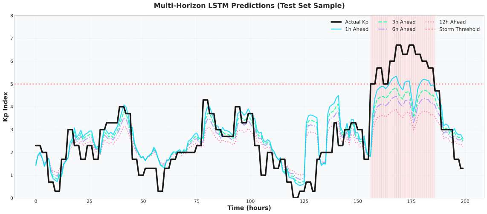
Avoiding the Data Leakage Trap
Geomagnetic indices like ap, AE, and AL are strongly correlated with Kp because they all derive from magnetometer measurements responding to the same underlying phenomena. This creates real risk of leakage if the model accidentally uses concurrent index values to predict Kp. I verified that the indices are 3 hour averaged values (not instantaneous), that the 24 hour lookback window uses strictly historical values to predict future Kp, and that the 1 year temporal gaps between train, validation, and test sets prevent any contamination across the splits. Operational forecasting literature confirms that including these indices is standard practice rather than a methodological shortcut.
Operational Reading
The 1 hour forecast clears a useful operational bar: 45% better RMSE than naive mean prediction, and R² of 0.690 (the model explains roughly two thirds of variance in storm intensity). For longer horizons, the model degrades but stays informative, which is exactly the property a real operator needs: a single model that gives the immediate alarm and a softer signal further out, instead of four separate models that might silently disagree.
Managing July Energy Demand Under a Warming Climate
A 5°C heatwave in July would push residential peak hour load 25.4% above current levels in the Carolinas, swamping utility capacity. This project trains a Random Forest model on multi source household, weather, and metadata to forecast that surge, then quantifies the policy lever: raising the cooling setpoint by 1°C during peak hours recovers 9.2% of that demand. Built for eSC (Electric South Carolina) to inform infrastructure planning without spending on new generation.
Why This Matters
Residential energy is the part of the grid most exposed to climate shocks. When July temperatures rise, air conditioning load swings hard upward, peak hour demand spikes, and grid operators face a choice: build more generation (slow, expensive, capital intensive) or shift demand through pricing and behavioral signals (fast, cheap, but only effective if you know what works). This project gives eSC the second tool. We forecast residential consumption under a sustained warming scenario, then quantify which interventions recover the most demand without infrastructure investment.
Stakeholders
- Utility capacity planners get a defensible peak load estimate under temperature shock, instead of extrapolating last summer.
- Demand response program managers get a quantified savings estimate for the simplest possible intervention (a 1°C cooling setpoint shift), useful for justifying smart thermostat rollouts.
- Regulators and ratepayer advocates get evidence that behavioral and efficiency programs can substitute meaningfully for new generation capacity.
Data
Three datasets joined on common keys: a household metadata file (square footage, occupants, wall insulation type, cooling setpoint), an hourly energy consumption file linked by bldg_id, and a weather file linked by in.county. A metadata file documented each column's semantics. The combined data was filtered to July only to focus on peak cooling season, then merged into one record per house per hour. A reusable merge function was written so the same pipeline can be applied to other months and seasons.
What Drives Residential Consumption
EDA established four primary drivers of July energy usage:
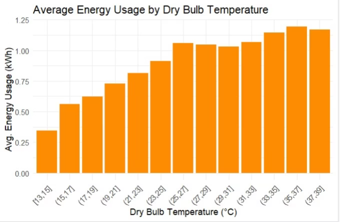
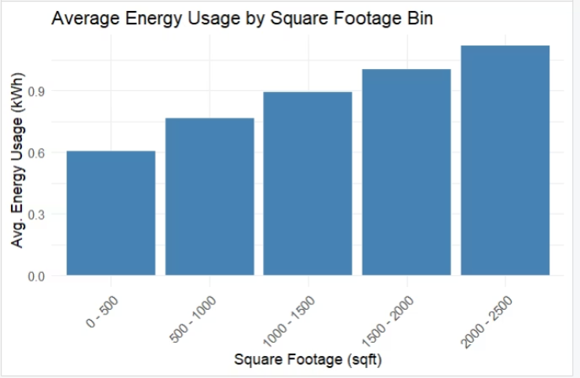
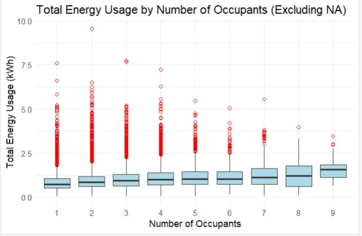
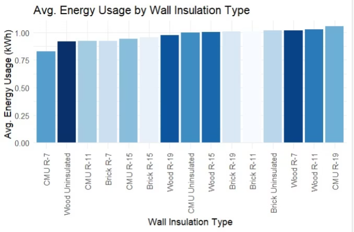
Outdoor temperature is the dominant driver. Square footage scales linearly with consumption. Occupant count matters but plateaus quickly. Wall insulation shows surprisingly modest variation across the housing stock, suggesting envelope upgrades have lower marginal return than HVAC and setpoint interventions on this dataset.
Models Compared
Three models trained on five features (dry bulb temperature, square footage, occupants, cooling setpoint, hour of day):
| Model | RMSE (kWh) | R² | Notes |
|---|---|---|---|
| Linear Regression | 0.583 | 0.29 | Cannot capture non linear temperature response |
| XGBoost | 0.503 | 0.47 | Strong on non linear patterns, close second |
| Random Forest | 0.500 | 0.48 | Selected for forecasting |
The +5°C Stress Test
Sustained warming scenarios were applied directly to the temperature feature and pushed through the trained model:
- Average July hour, baseline: 1.09 kWh predicted.
- Average July hour, +5°C: 1.25 kWh predicted (a 14.7% increase).
- Peak hour (9 PM) baseline: 81,600 kWh aggregate across the sample.
- Peak hour (9 PM) at +5°C: 102,355 kWh aggregate, a 25.4% surge.
Policy Lever: 1°C Setpoint Adjustment
Layering a 1°C cooling setpoint increase during peak hours (16:00 to 21:00) on top of the +5°C warming scenario produces:
- Average usage at +5°C: 1.30 kWh per hour
- Average usage with +1°C setpoint adjustment: 1.18 kWh per hour
- Average savings: 0.12 kWh per hour, or 9.2% of peak hour demand
The number is what makes the analysis actionable. A single degree of thermostat tolerance, applied across a customer base, recovers nearly one tenth of warming driven peak load without any infrastructure investment.
Recommendations to eSC
- Time of use pricing during peak hours. Shift discretionary demand off peak through price signals rather than capacity expansion.
- Smart thermostat rollout. Enables the 1°C setpoint adjustment to happen automatically across the customer base instead of relying on individual behavior change.
- Modern HVAC incentives. Older units carry disproportionate cooling load; replacement programs targeted at the worst performers compound the setpoint benefit.
- Passive cooling design for new builds. Long term lever that compounds over the multi decade life of housing stock.
Challenging "Wealth Equals Health": Education as the Hidden Lever
Development policy is built on the assumption that richer countries are automatically healthier. This project tests that assumption statistically against 180+ countries of Gapminder data (2000 to 2020) and finds that education explains child mortality just as strongly as income does. Bayes Factor evidence in favor of the combined model exceeds 10^288. The recommendation: rural development funding should prioritize schools and maternal education over chasing GDP growth.
Why This Matters
"Richer countries are healthier" is one of the most common framings in development discourse, and it has a real consequence: development funding tends to flow toward GDP growth as the master strategy, with health and education treated as downstream beneficiaries. This project was designed to be both academically rigorous and practically useful, with the explicit goal of producing evidence a community leader can use to argue for education investment in rural communities. The audience for the final report is intentionally non technical: adults, teenagers, and children who can act on the conclusion.
Research Questions
- To what extent does income influence life expectancy across countries?
- Can education serve as a more effective tool than income in reducing child mortality?
Data
Gapminder global dataset covering 180+ countries between 2000 and 2020. Variables:
- GDP per capita as the measure of national income, log transformed to address right skew from extreme high income outliers.
- Life expectancy as the primary health outcome, ranging from approximately 40 to 85 years.
- Child mortality as the most policy responsive health metric, ranging from fewer than 5 deaths per 1,000 births in high income countries to over 150 in low income countries.
- Mean years of schooling for adults aged 25 to 34, the most reliable cross country proxy for education access, ranging from 2 to 15 years.
Exploratory Visualizations
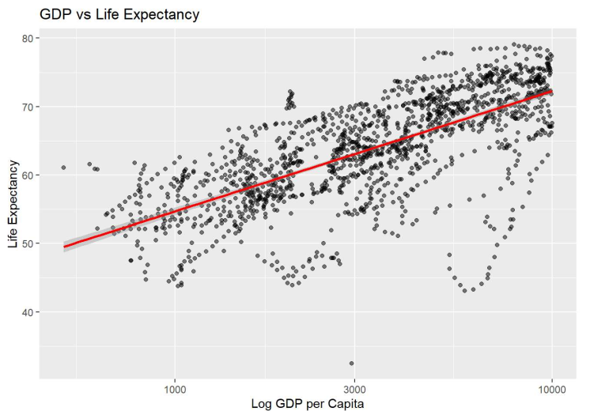
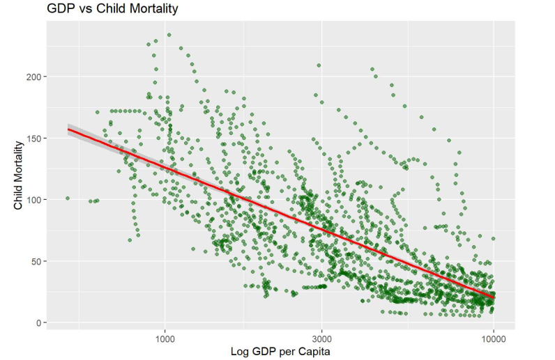
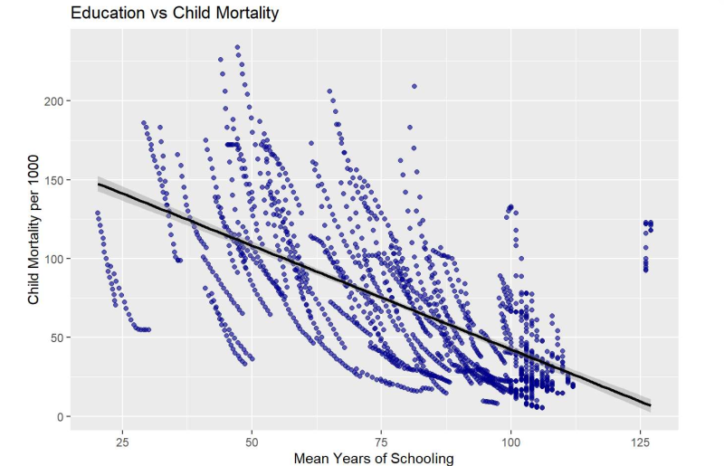
Question 1: Does GDP Predict Life Expectancy?
Linear regression of life expectancy on log GDP per capita yielded a coefficient of 17.6 (p < 2e-16), confirming a strong positive relationship. Bayesian regression returned a Bayes Factor of 5.66 × 10²¹⁸ in favor of GDP as a predictor, which is overwhelming evidence. The answer to the first question is yes, GDP matters.
Question 2: Does Education Beat GDP for Child Mortality?
Multiple regression of child mortality on both mean years of schooling and log GDP returned two significant negative coefficients:
- Mean years of schooling: estimate = -0.76, p < 2e-16
- Log GDP per capita: estimate = -74.14, p < 2e-16
Bayesian model comparison returned a combined Bayes Factor of 1.65 × 10²⁸⁸ in favor of the model that includes both predictors, an extraordinarily large number that translates to overwhelming evidence both predictors carry independent information about child mortality.
Confirmatory Tests
Welch's t test compared child mortality between high education and low education country groups:
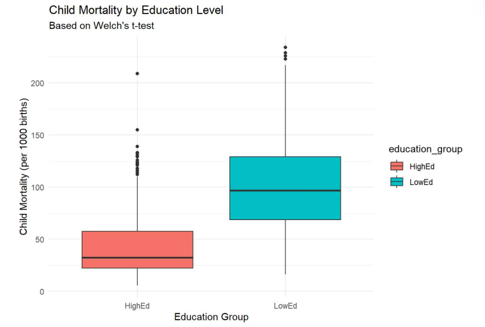
One way ANOVA on life expectancy by GDP group (Low, Medium, High) returned F = 426.5, p < 2e-16:
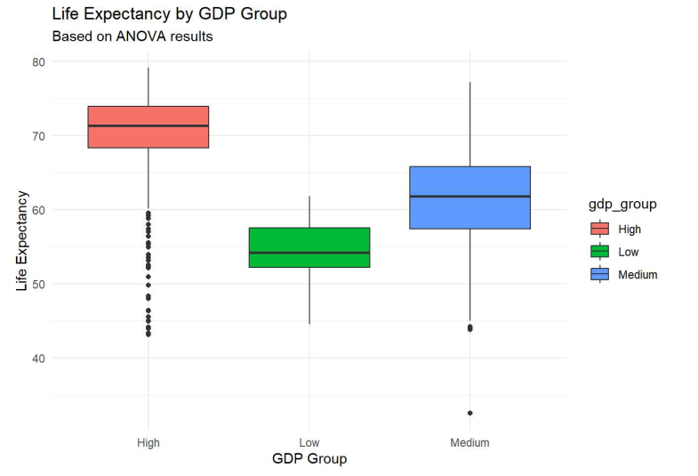
The Practical Conclusion
Income matters, but it is not the lever development funders should pull first. Education is just as strong a predictor of child mortality as GDP is, and unlike GDP, education is something a rural community can act on directly through school access, teacher training, and maternal literacy programs.
Each additional year of schooling is associated with a measurable drop in child deaths, regardless of country wealth. For a community leader, the evidence based call to action is clear: keep children (especially girls) in school through secondary education, combine schooling with practical instruction on hygiene, nutrition, vaccination, and early childhood care, and advocate for school infrastructure investment. The data shows these efforts have life saving consequences in a way that simply waiting for GDP growth does not.
Travel Itinerary Management System
Travel planning apps usually fail in the same way: the database is so badly designed that simple consistency rules (don't let costs go negative, don't let activities last zero minutes) live as fragile validation code in three different layers. This project moves that logic into the database itself through stored procedures, triggers, and a normalized schema with 12 entities, so the data layer enforces what was previously hoped at the application layer.
Why This Matters
Travel apps rely on enforcing rules consistently across every access path: an activity cannot have negative cost, a hotel must belong to a real destination, an itinerary cost should always equal the sum of its components. The naive approach puts those rules in application code, where each new feature or platform reintroduces them, badly. The mature approach puts the rules in the database itself, so any client (web, mobile, batch import, ad hoc SQL) gets the same guarantees automatically. This project demonstrates the second approach.
Stakeholders
- Travelers creating a trip get a single endpoint to call that returns a complete itinerary, with all the validation already done.
- Application developers get to stop writing defensive code in three languages to enforce business rules.
- Data analysts querying the database directly get clean, consistent data because the integrity rules apply even to direct SQL access.
Entity Relationship Design
Twelve interconnected entities in third normal form with full referential integrity. The core entity is itinerary, which links to destinations, activities, accommodations, transportation, seasonal information, and tags through explicit foreign keys.
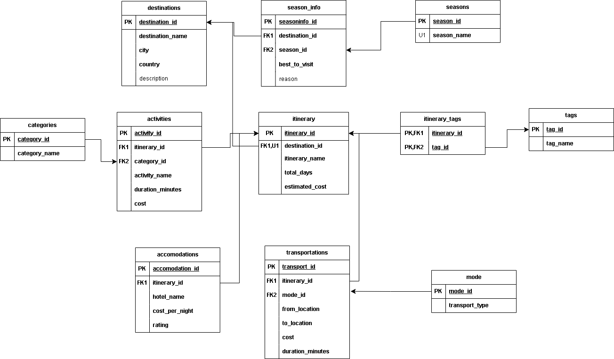
Stored Procedures
Three procedures cover the operations a travel app actually performs:
sp_add_full_itinerary_single: Inserts a complete itinerary (activity, transport, accommodation, season info, tag) in a single atomic call. Replaces what would otherwise be five separate inserts plus consistency checks at the application layer.sp_get_full_itinerary: Retrieves all linked details of an itinerary by ID, with joins handled inside the database.sp_get_itineraries_for_destination: Lists all itineraries available under a selected destination, the most common browse query.
Triggers for Data Integrity
trg_check_activity_duration: Rejects any activity insert or update where duration is zero or negative. Protects against a category of UI bugs and data import errors that would otherwise silently corrupt the cost calculations downstream.trg_check_activity_cost: Rejects negative cost entries, which usually indicate a typo or unit conversion error rather than a genuine refund.
Function for Reusable Logic
ufn_estimate_total_activity_time: Returns the total time a traveler will spend on all activities in a given itinerary. Used in views, filters, and ranking interfaces so itineraries can be sorted or filtered by total activity duration without recomputing the math each time.
User Story Worked Through End to End
"As a traveler, I want to create a trip by selecting options, so I can generate a full itinerary."
Implementation: the client passes destination, activity, transport, accommodation, season, and tag to sp_add_full_itinerary_single. The procedure inserts each child record, links them through the itinerary table, runs the duration and cost triggers, and returns the new itinerary_id. One round trip from the client, full validation, atomic on the database side.
Design Philosophy
Proper database design absorbs complex business rules at the data layer, reducing application complexity and guaranteeing integrity across every read and write path. When the database enforces invariants, you stop writing defensive code in multiple languages to protect them, and you stop debugging the same off by one bug five separate times for five separate clients.
Uber Data Engineering Pipeline
End to end cloud pipeline for NYC taxi trip data, from raw ingestion through analytical dashboard. Built on Google Cloud Platform with BigQuery for SQL analytics and Power BI for visualization. The point of the project was to do the full lifecycle in one piece.
Objective
Most data engineering exercises stop at a notebook. I wanted to do the full lifecycle in one project: ingestion, storage, transformation, modeling, querying, and visualization, end to end on a real cloud stack. The deliverable was not just a model or a chart, but the entire path from raw data file to stakeholder ready dashboard.
Architecture
Raw NYC taxi trip data was modeled into a star schema with fact and dimension tables in Lucid Charts, with explicit primary and foreign key relationships. Infrastructure was deployed on Google Cloud Platform with three layers:
- Storage layer. Cloud Storage as the data lake, holding raw and intermediate Parquet files.
- Compute layer. Compute Engine VMs running Python ETL jobs that read from Cloud Storage, transform with Pandas and NumPy, and write back as cleaned Parquet.
- Analytics layer. BigQuery for SQL analytics at scale, with the cleaned data loaded as partitioned tables for efficient time range queries.
Analysis and Presentation
Exploratory analysis in Jupyter surfaced patterns in trip distance distribution, fare structure, revenue concentration, and service utilization across boroughs and times of day. The findings then fed an interactive Power BI dashboard with geographical heat maps, time series views, and slicers for stakeholder driven exploration.
Lesson
The real lesson was less about any individual tool and more about what moving from local CSV files to distributed cloud storage and compute fundamentally changes about how you think. When data lives in object storage and compute is elastic, scaling up by an order of magnitude becomes a configuration change rather than a bottleneck. That mindset shift is the actual deliverable.
Digit Recognition Neural Network from Scratch
Complete feedforward neural network for MNIST handwritten digit recognition, implemented from first principles in NumPy with no TensorFlow, PyTorch, or autograd. Achieved 94% test accuracy through iterative hyperparameter tuning. The point was the learning, not the result.
Why Build from Scratch
Frameworks abstract exactly the parts of a neural network that are most useful to understand: the matrix shapes flowing forward, the gradient math flowing backward, and the way optimization actually changes weights. Building all three by hand once gives you a working mental model for the rest of your career. When a production model later silently fails, you reason about gradient flow rather than swapping layers and hoping.
Implementation
Forward propagation was implemented as explicit weighted sums and activation functions: sigmoid for hidden layers in the first iteration, then ReLU once vanishing gradients became visible, with softmax at the output for the ten class classification. Backpropagation was coded as gradient computation via the chain rule, layer by layer, with explicit derivative formulas for each activation function. A mini batch gradient descent optimization loop handled training, with tunable learning rate, batch size, and network depth.
Tuning
Hyperparameter tuning was iterative and manual, which is exactly the point of this kind of exercise. Learning rate too high and the loss bounced. Too low and training stalled. Network too shallow and the model could not capture digit structure. Too deep without proper initialization and gradients vanished. Working through these failures by hand is how you learn what each knob actually controls.
Result
Final accuracy of 94% on the held out MNIST test set. Not state of the art, but the goal was understanding rather than benchmark chasing. The exercise made it intuitive why deeper networks, non linear activations, and proper initialization matter, which is the kind of grounding that makes debugging production models much easier later.
Real Time Big Data Inflow: Communication and Computation Delay Analysis
Research paper surveying how real time IoT data moves through cloud, fog, edge, and crowd computing tiers, with a focus on where latency actually accumulates and how hybrid architectures can compress it by 40 to 60% for appropriately partitioned workloads.
Argument
The implicit default in most enterprise architectures is to send everything to the cloud. For real time systems, that default is wrong. The interesting design work is deciding which computations belong near the sensor (where latency is cheap but durability is fragile and storage is limited) and which belong in the data center (where storage is durable and compute is elastic but round trips cost real time).
Approach
The paper reviews twelve primary sources on stream processing, edge deployment patterns, and latency optimization in distributed systems. Each source is summarized for its proposed architecture and headline findings. From the literature, I propose a tiered hybrid architecture that pushes time critical computation toward the edge while retaining cloud tiers for durability, batch analytics, and global state.
Comparative Analysis
Cloud only and tiered architectures are compared across six dimensions: scalability, reliability, bandwidth usage, privacy and security, cost effectiveness, and end to end latency. The tiered architecture wins on latency (40 to 60% reduction for appropriately partitioned workloads), bandwidth (less raw data crosses the WAN), and privacy (sensitive data can be processed locally), while paying a small price in operational complexity and consistency guarantees.
Experience
Research Assistant, Gravity Spy 2.0
- Classifications88,925 processed
- Volunteers269 contributors
- Subjects25,104 unique
- Channels Mapped455 LIGO subsystems
Research assistant on an NSF funded citizen science project supporting LIGO (the Laser Interferometer Gravitational Wave Observatory). The scientific goal is causal inference on detector noise: figuring out which auxiliary subsystems are responsible for the transient glitches that contaminate gravitational wave strain data, so detector commissioners can fix the right hardware rather than chasing symptoms.
Built the end to end data processing pipeline in Python (Jupyter) that turns raw Zooniverse classification exports into analysis ready datasets, spanning 23 months of LIGO observations (May 2023 to April 2025). Engineering challenges include handling five different subject metadata schemas across project iterations, filtering out roughly 38 science team and developer accounts, and reconciling differences in field naming between schemas (for example, #gps versus #gps_time).
The pipeline produces three core outputs: a subject level flat file with aggregated volunteer labels (Yes, No, Not Sure counts, total classifications, majority vote), a separate file for subjects missing GPS metadata, and a GPS time by auxiliary channel pivot matrix covering 455 LIGO subsystems including PEM, SUS, LSC, ISI, ASC, and CAL.
Conducted the full descriptive analysis: volunteer effort distribution (heavily right tailed, top ten volunteers account for 50% of classifications), subject level inter volunteer agreement (52% perfect consensus on multi classified subjects), and response distribution across workflow versions. Code is committed to the Syracuse CCDS GravitySpy Classifier repository. Next phase scopes a CNN or vision transformer model to predict volunteer similarity labels directly from LIGO spectrogram image pairs.
Cybersecurity Teaching Assistant
- Labs Delivered15+ hands on labs
- ToolchainWireshark, Kali, Nmap, OpenSSL, Metasploit
- VM StackKali, Win 10/Server, CentOS, Metasploitable
- DomainsCrypto, Network, Pentest, Forensics
Developed and delivered hands on cybersecurity labs covering cryptography, network security, penetration testing, and digital forensics. Labs walk students through the full attacker workflow, from OSINT reconnaissance and port scanning to exploitation and post compromise enumeration, then flip the perspective to defensive analysis: packet inspection, log correlation, and incident reporting.
Built and maintained multi VM lab environments combining Kali Linux as the attacker platform against Windows 10, Windows Server, CentOS, and Metasploitable targets. Graded security labs and incident analysis reports, reinforcing packet analysis, OSINT reconnaissance, ethical hacking, and hashing (SHA 256, SHA 512), with detailed feedback on student methodology rather than just answers.
Data and Product Analyst Intern
- SaaS Users5,000+ analyzed
- Customer Records2,000 clients
- Churn Reduction5 percent
- Rating Lift4.2 to 4.6
Performed product and customer analytics in Python across SaaS products serving 5,000+ users. Delivered SWOT analyses, competitive feature benchmarking against Zoho and Salesforce (100 to 150 features compared), and Ideal Customer Profile (ICP) analyses to inform product strategy and prioritization meetings.
Analyzed customer datasets covering 2,000 clients using Python and Excel pivot tables to surface behavior patterns, pain points, and conversion drivers. Findings enabled the product team to prioritize two high impact features for the next release that materially lifted trial to paid conversion. Built interactive Tableau dashboards sourced from SQL and Excel, identifying under used features and reducing customer churn by 5 percent. Contributed to feature launches including live chat support and dashboard summaries, with average product ratings improving from 4.2 to 4.6.
Technical Skills
Certifications
Lean Six Sigma Green Belt
Education
Master of Science, Applied Data Science
Bachelor of Technology, Computer Science and Engineering
Let's Connect
I am open to Data Science, Machine Learning, and Data Engineering roles starting Spring 2027. Happy to chat about research, open source work, or anything at the intersection of ML systems and real world scientific data.
Reach me at tanayp1769@gmail.com or +1 (315) 418 2156. You can also find me on LinkedIn and GitHub. Based in Syracuse, New York.
© 2026 Tanay Pratap Singh. All rights reserved.